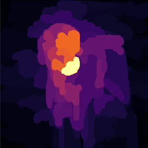

Insightful Saliency Maps
Make your own stylized image. See what the AI predicts. Is it biased towards texture or shape?
AI Prediction:
Want to stylize another image?

Explore the saliency maps of stylized images. See how they compare to the saliency map of the original, un-stylized image.
Choose a stylized image:
Show XRAI
Hide XRAI
Overlap XRAI
Original image:
Compute the average saliency
Draw what the AI sees.
See how your perception compares to the AI.
Original Image
How does the AI see it?
The AI makes predictions based on regions it feels are important to identifying the image. Can you guess what places in this image the AI feels are the most important to identifying it?
What is somewhat important? Finally, what is least important?